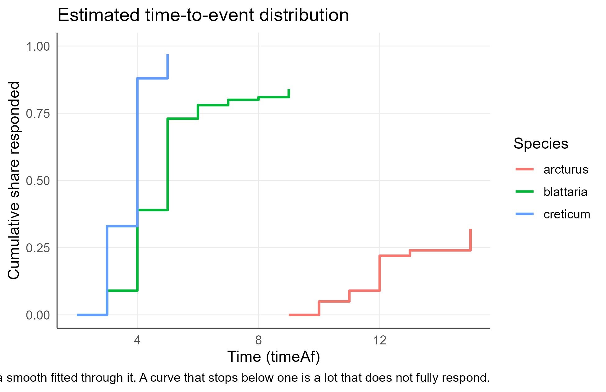
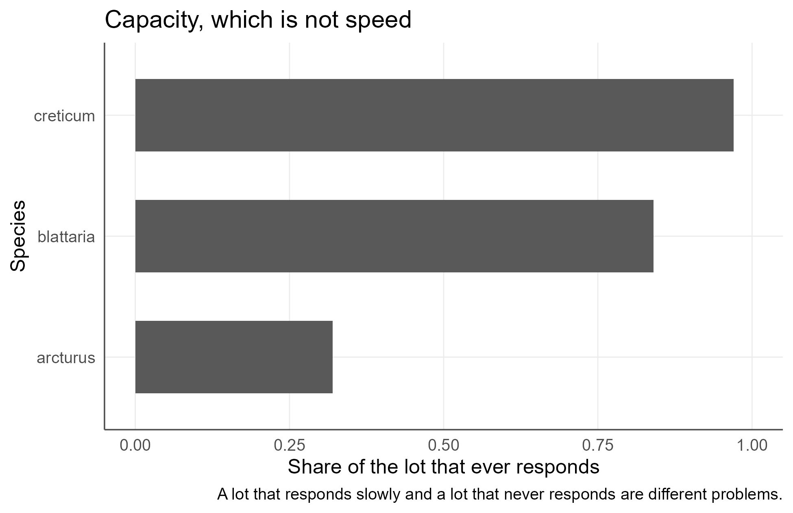
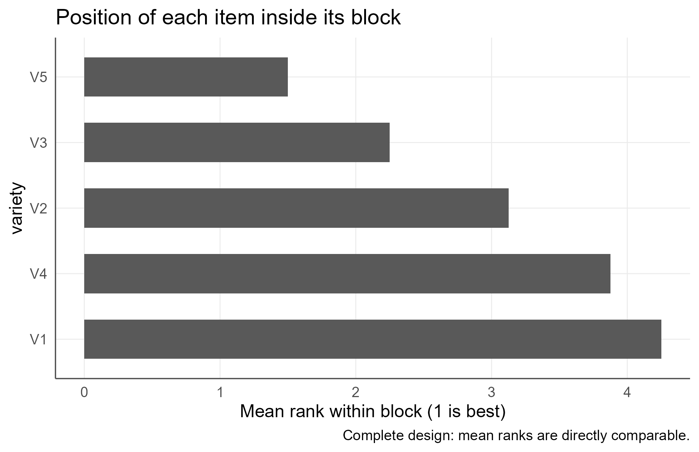
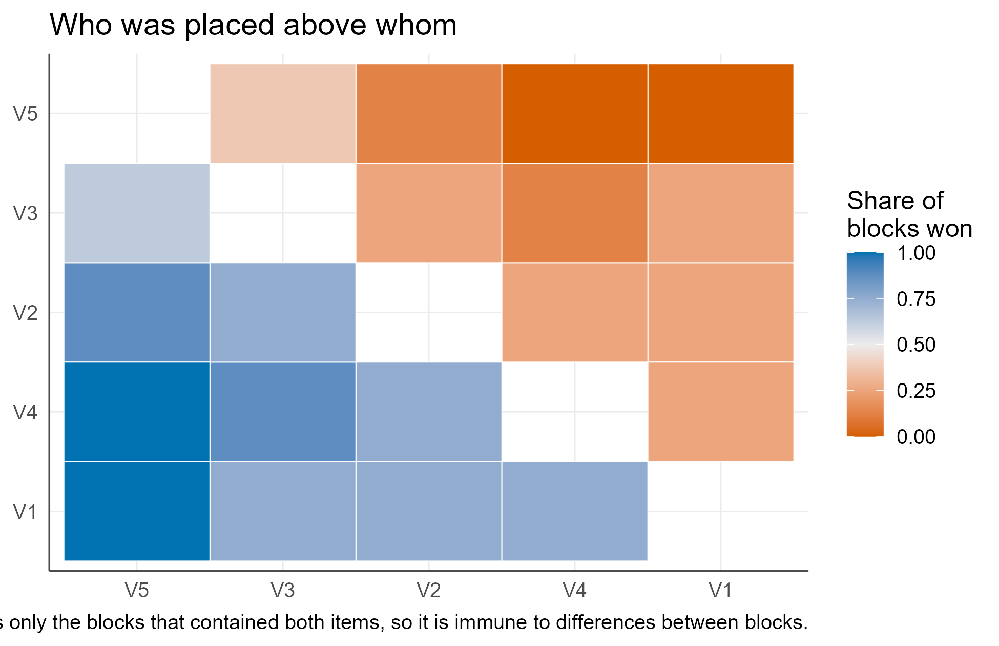

Time-to-Event and Ranking Data
agriRank Development Team
Source:vignettes/v13-time-to-event-and-ranking-data.Rmd
v13-time-to-event-and-ranking-data.RmdNon-measurement vignette Package:
agriRank Version targeted:
0.14.0 Owns: the two agronomic experiments
whose datum is not a measurement. Germination counted inside intervals,
and on-farm trials returning an order.
1. Why this vignette exists
Two kinds of agronomic experiment routinely have their data forced into methods built for measurements, and in both cases the result is a number the data do not contain.
A germination trial produces counts inside intervals, with some subjects never responding. The habitual analysis converts them to cumulative percentages and fits a curve, which asserts that the event time was observed, that successive cumulative values are independent, and that the lot eventually reaches 100%. All three are false.
An on-farm trial produces an order. Nothing was weighed. The habitual analysis assigns scores to the ranks and treats them as measurements, which imports an interval scale the data never had.
Report the quantity the data contain. Where a lot never reaches half, it has no median; where a design is incomplete, rank sums are not comparable. Say so.
2. Learning objectives
After working through this vignette, the reader should be able to:
- recognise interval-censored data and explain why the intervals matter;
- explain why a subject that never responds is an observation, not a gap;
- list the three assumptions the cumulative-percentage approach makes, and why each fails;
- separate the capacity of a seed lot from its speed, and report both;
- explain why a whole-lot median can be
NA, and why that is the answer; - choose the correct experimental unit for a germination permutation test;
- detect and correct the omission of censored rows;
- read within-block rankings as the analysis rather than as a summary;
- explain why completeness decides which ranking methods are admissible;
- read a pairwise record, including its
blockscolumn; - place a Plackett-Luce worth estimate correctly, as a model-based companion.
3. The module in one map
| Function | Answers | Requires |
|---|---|---|
agri_np_timetoevent() |
when, and how many, responded |
count ~ start + end, end = Inf for
censored |
plot(type = "cdf") |
the estimated distribution, as steps | a fitted object |
plot(type = "capacity") |
how much of each lot responds at all | a fitted object |
agri_rankings() |
who was placed above whom, inside blocks | block |
plot(type = "items") |
mean rank per item | a rankings object |
plot(type = "pairwise") |
the dominance matrix | at least two items |
3.1 What replaces what
data.frame(
habitual = c("curve through cumulative percentages",
"t50 from that curve",
"drop the ungerminated seeds",
"scores assigned to ranks",
"rank sums across an incomplete design"),
correct = c("nonparametric MLE under interval censoring",
"capacity and speed reported separately",
"code them as end = Inf",
"the ranks themselves",
"the pairwise record, made inside blocks")
)
#> habitual
#> 1 curve through cumulative percentages
#> 2 t50 from that curve
#> 3 drop the ungerminated seeds
#> 4 scores assigned to ranks
#> 5 rank sums across an incomplete design
#> correct
#> 1 nonparametric MLE under interval censoring
#> 2 capacity and speed reported separately
#> 3 code them as end = Inf
#> 4 the ranks themselves
#> 5 the pairwise record, made inside blocks4. Scope and navigation
Every other vignette in this package analyses a measurement: a yield, a height, a SPAD reading. This one covers the two agronomic experiments that do not produce one.
A germination trial produces counts inside intervals. A tray is inspected on day 3, day 5, day 7. A seed that germinated between two inspections is known only to have done so somewhere inside that interval, and a seed that never germinates is not a missing value: it is an observation, censored at the end of the trial.
An on-farm or tricot trial produces an order. Each farmer receives three of thirty varieties and returns a ranking. Nothing was weighed, so there is no response to analyse; the order is the datum.
Both are routinely forced into methods built for measurements, and in both cases the damage is the same kind: a quantity gets reported that the data do not contain. This vignette shows what the honest analysis looks like, and what it refuses to report.
Measured responses in declared designs belong to Design Foundations and Effects, Conover Comparisons and Factorials. Measured responses over a gradient belong to the regression vignettes.
1. Germination is counted, not measured
1.1 What the usual analysis assumes
The common route is to turn the counts into cumulative germination percentages and fit a curve through them. That makes three assumptions at once, and all three are false for this kind of data:
| Assumption | Why it fails |
|---|---|
| the germination time was observed | it is only known to lie inside an interval |
| successive percentages are independent | each cumulative value contains all the earlier ones |
| the lot eventually reaches 100% | many lots do not, and forcing the curve up invents germination for seeds that never germinated |
The nonparametric maximum likelihood estimator of the time-to-event distribution avoids all three. It uses the intervals as intervals, assumes no functional form for the curve, and leaves probability mass on “never”.
data(verbascum, package = "drcte")
str(verbascum)
#> 'data.frame': 192 obs. of 6 variables:
#> $ Dish : int 41 41 41 41 41 41 41 41 41 41 ...
#> $ Species: Factor w/ 3 levels "arcturus","blattaria",..: 1 1 1 1 1 1 1 1 1 1 ...
#> $ timeBef: int 0 1 2 3 4 5 6 7 8 9 ...
#> $ timeAf : num 1 2 3 4 5 6 7 8 9 10 ...
#> $ nSeeds : int 0 0 0 0 0 0 0 0 0 0 ...
#> $ nCum : int 0 0 0 0 0 0 0 0 0 0 ...Three Verbascum species, 100 seeds each, inspected daily.
timeBef and timeAf bound the interval in which
each seed germinated; seeds that never germinated appear with
timeAf = Inf. Dish is the Petri dish, which is
the experimental unit.
1.2 Capacity and speed are two properties, not one
tte <- agri_np_timetoevent(nSeeds ~ timeBef + timeAf, verbascum,
by = Species, units = Dish, B = 199, seed = 1)
tte
#> Nonparametric time-to-event, NPML estimator under interval censoring
#> Counts: `nSeeds` Interval: `timeBef` to `timeAf` Curves by: `Species` Units: `Dish`
#>
#> level subjects responded t10_responders t10_lot t50_responders t50_lot
#> arcturus 100 0.32 9.640 11.077 11.538 NA
#> blattaria 100 0.84 2.933 3.033 4.088 4.324
#> creticum 100 0.97 2.294 2.303 3.282 3.309
#> t90_responders t90_lot
#> 14.600 NA
#> 5.520 NA
#> 3.987 4.222
#>
#> `responded` is capacity, the share of the lot that ever responds.
#> `*_responders` is speed among those that did respond and always exists.
#> `*_lot` is measured on the whole lot and is NA when the lot never
#> reaches that share: such a lot has no median time, and reporting one
#> would invent a response for subjects that never had one.
#>
#> At least one whole-lot quantile is NA. Report the capacity and the
#> speed of the responders separately; one number cannot carry both.
#>
#> Permutation test:
#>
#> comparison scores statistic p_value permutations
#> equality of the 3 time-to-event curves wmw 59.99 0.005 199
#> clustered_by
#> DishRead the table in two halves.
Capacity is responded: the share of the
lot that germinates at all. V. arcturus reaches 0.32, V.
blattaria 0.84, V. creticum 0.97. These are three very
different seed lots, and no measure of speed will tell you that.
Speed is the quantiles, and they are reported twice
on purpose. t50_responders is measured among the seeds that
did germinate and always exists. t50_lot is measured on the
whole lot and is NA for arcturus, because a lot in
which only 32% of seeds germinate never reaches half. That
NA is the result. Reporting a median germination time there
would require inventing a germination date for seeds that never
germinated.
A single “t50” therefore cannot summarise this experiment, and any analysis that produces one for arcturus has assumed something the data deny.
plot(tte, type = "cdf")
Estimated time-to-event distributions. The step function is the estimate itself, not a smooth curve fitted through cumulative percentages. A curve that stops below one is a lot that does not fully germinate.
plot(tte, type = "capacity")
Capacity alone. A lot that germinates slowly and a lot that never germinates are different agronomic problems and call for different decisions.
1.3 Comparing curves, at the level the randomization happened
tte$test
#> comparison scores statistic p_value permutations
#> 1 equality of the 3 time-to-event curves wmw 59.98664 0.005 199
#> clustered_by
#> 1 DishThe comparison is a permutation test on rank scores, so it assumes no distribution for the germination times.
The clustered_by column matters more than the p-value.
Seeds sharing a Petri dish share its water, its temperature and its
handling, so they are not independent observations. Permuting individual
seeds would treat 100 seeds as 100 independent replicates when the
experiment has far fewer. Passing units permutes whole
dishes instead.
The function warns when units is omitted rather than
quietly producing the anticonservative answer:
res <- tryCatch(
agri_np_timetoevent(nSeeds ~ timeBef + timeAf, verbascum, by = Species,
B = 49, seed = 1),
warning = function(w) conditionMessage(w))
cat(res, "\n")
#> No `units` given, so the permutation test treats every seed as an independent subject. Seeds sharing a dish share its water, temperature and handling, so the test will be anticonservative. Pass `units =` naming the dish, tray or plot.1.4 The censored rows are data, not gaps
The commonest data-entry error in this area is to omit the ungerminated seeds entirely. The consequence is silent and severe: the lot is then treated as fully germinable and its capacity is overstated.
dropped <- verbascum[is.finite(verbascum$timeAf), ]
res <- withCallingHandlers(
agri_np_timetoevent(nSeeds ~ timeBef + timeAf, dropped, by = Species,
units = Dish, B = 49, seed = 1),
warning = function(w) invokeRestart("muffleWarning"))
res$summary[, c("level", "subjects", "responded")]
#> level subjects responded
#> 1 arcturus 32 1
#> 2 blattaria 84 1
#> 3 creticum 97 1Every species now appears to germinate completely, and arcturus has lost 68 of its 100 seeds from the analysis. The function warns about this, because the difference between “did not germinate” and “was not recorded” is the whole result.
2. When the datum is an order
2.1 Ranks are not a summary, they are the analysis
Every rank-based test in this package already works on within-block
ranks. Friedman and the Conover comparisons convert the measured
response into ranks inside each block and never look at the measurements
again. agri_rankings() shows those ranks.
set.seed(5)
d <- expand.grid(variety = factor(paste0("V", 1:5)),
farm = factor(paste0("F", 1:8)))
d$yield <- 3 + c(V1 = 0, V2 = 0.6, V3 = 1.1, V4 = 0.3, V5 = 1.4)[d$variety] +
as.numeric(d$farm) * 0.2 + rnorm(nrow(d), 0, 0.5)
r <- agri_rankings(yield ~ variety, d, block = farm)
r$summary
#> item blocks mean_rank rank_sum wins win_share
#> 1 V5 8 1.500 12 5 0.625
#> 2 V3 8 2.250 18 3 0.375
#> 3 V2 8 3.125 25 0 0.000
#> 4 V4 8 3.875 31 0 0.000
#> 5 V1 8 4.250 34 0 0.000The design is complete, every variety appears on every farm, so the rank sums are comparable and the usual machinery applies:
fit <- np_rcbd(yield ~ variety, d, block = farm)
fit$omnibus
#> effect statistic df p_value
#> 1 variety 16.5 4 0.002416642
plot(r, type = "items")
Mean rank within farm. Lower is better.
2.2 The pairwise record
head(r$pairwise, 5)
#> item_a item_b blocks a_above_b b_above_a ties share_a p_value
#> 1 V1 V2 8 2 6 0 0.25 0.2890625
#> 2 V1 V3 8 2 6 0 0.25 0.2890625
#> 3 V1 V4 8 2 6 0 0.25 0.2890625
#> 4 V1 V5 8 0 8 0 0.00 0.0078125
#> 5 V2 V3 8 2 6 0 0.25 0.2890625Each row uses only the blocks that contained both items. In a complete design that is every block; in the incomplete design of the next section it is not, and that is precisely why this table survives incompleteness when rank sums do not.
plot(r, type = "pairwise")
Share of blocks in which the row item was placed above the column item.
2.3 On-farm trials are incomplete, and that changes what is admissible
In a tricot trial each farmer receives three varieties out of many. The design is incomplete by construction.
set.seed(9)
vars <- paste0("V", 1:9)
tri <- do.call(rbind, lapply(1:40, function(i) {
pick <- sample(vars, 3)
q <- c(V1 = 1, V2 = 2, V3 = 3, V4 = 1.5, V5 = 3.5,
V6 = 2.2, V7 = 0.8, V8 = 2.8, V9 = 1.2)[pick] + rnorm(3, 0, 0.8)
data.frame(farm = paste0("F", i), variety = pick, position = rank(-q),
stringsAsFactors = FALSE)
}))
rt <- agri_rankings(position ~ variety, tri, block = farm, ranked = TRUE)
rt$completeness
#> blocks items observations expected_if_complete complete
#> 1 40 9 120 360 FALSE120 orderings out of the 360 a complete design would have produced.
rt$summary
#> item blocks mean_rank rank_sum wins win_share
#> 1 V5 14 1.285714 NA 10 0.71428571
#> 2 V8 9 1.444444 NA 6 0.66666667
#> 3 V3 17 1.588235 NA 8 0.47058824
#> 4 V2 13 1.692308 NA 6 0.46153846
#> 5 V6 14 1.857143 NA 6 0.42857143
#> 6 V4 15 2.266667 NA 2 0.13333333
#> 7 V1 13 2.307692 NA 1 0.07692308
#> 8 V7 14 2.714286 NA 1 0.07142857
#> 9 V9 11 2.909091 NA 0 0.00000000rank_sum is withheld. This is the substantive point of
the section, so it is worth stating plainly: with an incomplete design,
a variety that happened to be allocated to favourable farms collects
flattering ranks for a reason that has nothing to do with the variety.
Summing those ranks and comparing the totals compares allocation as much
as genetics. mean_rank carries the same caution, which is
why the printed output says so.
What does survive is the pairwise record, because every comparison in it was made inside one farm:
head(rt$pairwise, 6)
#> item_a item_b blocks a_above_b b_above_a ties share_a p_value
#> 1 V1 V2 5 1 4 0 0.20 0.375
#> 2 V1 V3 4 0 4 0 0.00 0.125
#> 3 V1 V4 4 1 3 0 0.25 0.625
#> 4 V1 V5 2 0 2 0 0.00 0.500
#> 5 V1 V6 4 1 3 0 0.25 0.625
#> 6 V1 V7 4 4 0 0 1.00 0.125Note the blocks column. Some pairs were seen together on
many farms and some on one or two. A pair seen once carries almost no
information, and the table shows that instead of hiding it behind a
p-value.
2.4 The model-based companion
PlackettLuce fits a likelihood model to rankings and
returns one worth per item, which is what allows incomplete rankings to
be combined onto a single scale. agri_rankings() reports it
when the package is installed, in its own block and labelled:
if (is.null(rt$worth)) {
cat("PlackettLuce is not installed in this environment.\n")
} else {
print(rt$worth[order(-rt$worth$worth), ])
}
#> PlackettLuce is not installed in this environment.Two things are worth keeping straight.
It is not a distribution-free summary. It assumes the rankings arise from one common worth per item, and that assumption is doing real work: it is what makes the incomplete design analysable on a single scale at all. Where the worth ordering and the pairwise record disagree, the assumption is the difference.
Everything in sections 2.1 to 2.3 is distribution free and needs no
model. The package therefore reports it first, and degrades to it when
PlackettLuce is absent.
3. Reporting checklist
For a germination or emergence trial:
- the number of subjects and how many never responded, stated as data rather than dropped;
- capacity, the share responding, before any measure of speed;
- quantiles of the responders and of the whole lot, side by side, with
the
NApreserved where the lot never reaches that share; - the estimated distribution as a step function, not a smooth curve fitted through cumulative percentages;
- the permutation comparison with the unit that was randomized, dish or tray, named.
For a ranking or on-farm trial:
- whether the design is complete, before any rank sum is reported;
- the pairwise record with its
blockscolumn, so a comparison resting on two farms is visible as such; - if a Plackett-Luce worth is reported, its label as a model-based estimate and its agreement or disagreement with the pairwise record.
Every figure is a ggplot and every table a data frame,
so both can be restyled with agri_theme() or exported with
agri_save_figure().
4A. Fitting a curve to cumulative germination percentages
The mistake. Converting counts to cumulative percentages and fitting a log-logistic or Weibull curve to them.
Why it is wrong. It asserts three things at once: that the germination time was observed, that successive cumulative values are independent when each contains all the earlier ones, and that the lot reaches 100%.
What prevents it. agri_np_timetoevent()
uses the intervals as intervals, assumes no functional form, and leaves
mass on “never”. Parametric germination models are deliberately not
offered.
4B. Deleting the seeds that never germinated
The mistake. Removing rows with no event before analysis.
Why it is wrong. The demonstration in section 1.4 is unambiguous: every species then appears to germinate completely, and arcturus loses 68 of its 100 seeds from the analysis.
What prevents it. end = Inf is required
for censored subjects, and the function warns when no row carries
it.
4C. Reporting a single t50
The mistake. “Median germination time was 11.5 days.”
Why it is wrong. For a lot in which 32% of seeds germinate, there is no time by which half the lot has germinated. The number quoted is the median among the responders, which is a different quantity.
What prevents it. Quantiles are reported twice,
*_responders and *_lot, and the second is
NA where the lot never reaches that share.
4D. Permuting seeds instead of dishes
The mistake. Comparing germination curves by permuting individual seeds.
Why it is wrong. Seeds sharing a Petri dish share its water, temperature and handling. Permuting them treats 100 seeds as 100 independent replicates when the experiment has far fewer, and the p-value is anticonservative.
What prevents it. units = names the
dish, and the function warns when it is omitted rather than returning
the anticonservative answer silently.
4E. Confusing capacity with speed
The mistake. Ranking seed lots by t50 alone.
Why it is wrong. A lot that germinates quickly but only partially and a lot that germinates slowly but completely are different agronomic problems, and a single number cannot distinguish them.
What prevents it. responded is reported
first, before any quantile, and plot(type = "capacity")
shows it alone.
4F. Assigning scores to ranks and treating them as measurements
The mistake. Scoring first place as 3, second as 2, third as 1, and running an ANOVA.
Why it is wrong. It imports an interval scale the data never had: it asserts that the gap between first and second equals the gap between second and third.
What prevents it. agri_rankings() works
on the ranks themselves, and the Conover machinery of the comparisons
vignette does the same.
4G. Summing ranks across an incomplete design
The mistake. Comparing rank sums in a tricot trial.
Why it is wrong. A variety allocated to favourable farms collects flattering ranks for a reason unrelated to the variety. The comparison measures allocation as much as genetics.
What prevents it. agri_rankings()
detects incompleteness, reports it, and withholds
rank_sum.
4H. Ignoring the blocks column of the pairwise
record
The mistake. Reading a pairwise share of 1.00 as decisive.
Why it is wrong. A pair seen on one farm has a share of 0 or 1 by construction, and carries almost no information.
What prevents it. The blocks column is
reported beside every share, and the sign-test p-value reflects the
number of separating blocks.
4I. Reporting Plackett-Luce worth as a distribution-free summary
The mistake. Presenting worth estimates as the nonparametric result.
Why it is wrong. Plackett-Luce is a likelihood model for rankings. It assumes one common worth per item, and that assumption is what allows incomplete rankings to be combined onto a single scale.
What prevents it. The worth block is printed separately and labelled, and its absence changes nothing else in the output.
4J. Choose by what was recorded
| The datum is | Use |
|---|---|
| a measurement, in a declared design | the design vignettes |
| a count inside an interval, some never responding | agri_np_timetoevent() |
| a count with exact times | the same, with narrow intervals |
| an order, complete design |
agri_rankings(), then agri_conover()
|
| an order, incomplete design |
agri_rankings(), pairwise record only |
| an order, and a single scale is needed | Plackett-Luce, labelled as model-based |
4K. Choose the germination summary by the question
| The question | Report |
|---|---|
| how good is this seed lot |
responded, first |
| how fast does it germinate | t50_responders |
| by when will half the lot be up |
t50_lot, and accept NA
|
| do these lots differ | the permutation test, clustered by dish |
| how uniform is germination | the spread between t10 and t90 of
responders |
4L. Terms used in this vignette
| Term | Meaning here |
|---|---|
| interval censoring | the event is known to have occurred inside an interval |
| right censoring | the event had not occurred by the end of the trial |
| cured fraction | the share that never responds |
| capacity | the share of a lot that responds at all |
| speed | how quickly the responding part responds |
| NPMLE | nonparametric maximum likelihood estimator of the distribution |
| Turnbull intervals | the intervals on which the NPMLE places mass |
| experimental unit | the dish, tray or plot, not the individual seed |
| complete design | every item appears in every block |
| incomplete design | each block contains only a subset of the items |
| pairwise record | how often one item was placed above another, inside blocks |
| worth | a Plackett-Luce parameter placing items on one scale |
Part VII. Where to go next
| If you now want | Read |
|---|---|
| measured responses in declared designs | Design Foundations, CRD, and RCBD |
| comparisons and compact letters | Effects, Conover, Contrasts, and Factorial Inference |
| plant death as a treatment effect in a longitudinal trial | Repeated Measures and Missing Longitudinal Data |
| figures and tables for these outputs | Graphics, Tables, Reports, and Reproducibility |
| the whole workflow on one experiment | Integrated Agronomic Case Study |
References
Onofri, A., Mesgaran, M. B. and Ritz, C. (2022). A unified framework for the analysis of germination, emergence, and other time-to-event data in weed science. Weed Science, 70(3), 259-271. DOI: 10.1017/wsc.2022.8.
Turnbull, B. W. (1976). The empirical distribution function with arbitrarily grouped, censored and truncated data. Journal of the Royal Statistical Society Series B, 38(3), 290-295.
Turner, H. L., van Etten, J., Firth, D. and Kosmidis, I. (2020). Modelling rankings in R: the PlackettLuce package. Computational Statistics, 35, 1027-1057. DOI: 10.1007/s00180-020-00959-3.
van Etten, J., Beza, E., Calderer, L. et al. (2019). First experiences with a novel farmer citizen science approach. Experimental Agriculture, 55(S1), 275-296. DOI: 10.1017/S0014479716000739.